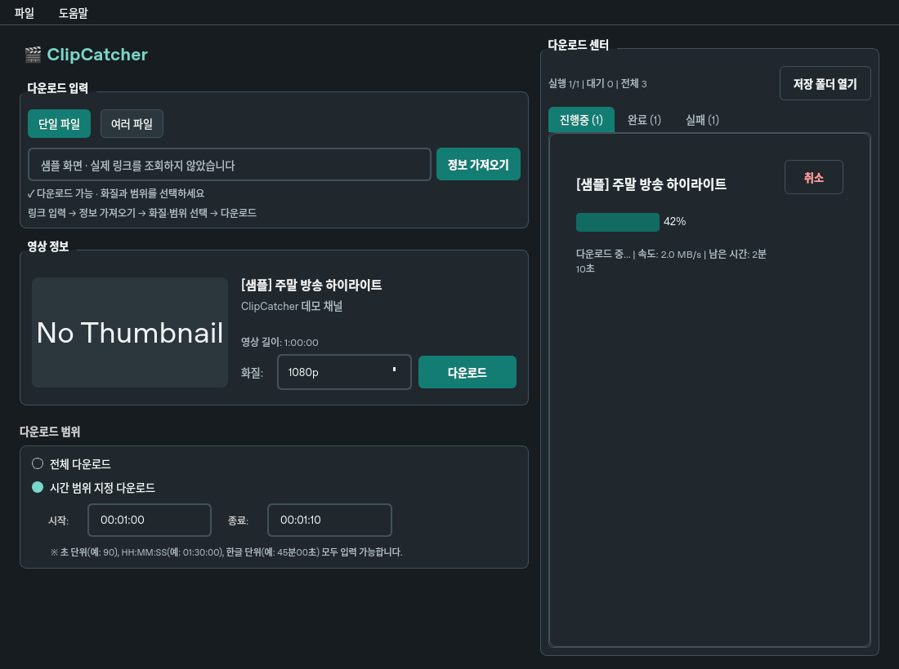
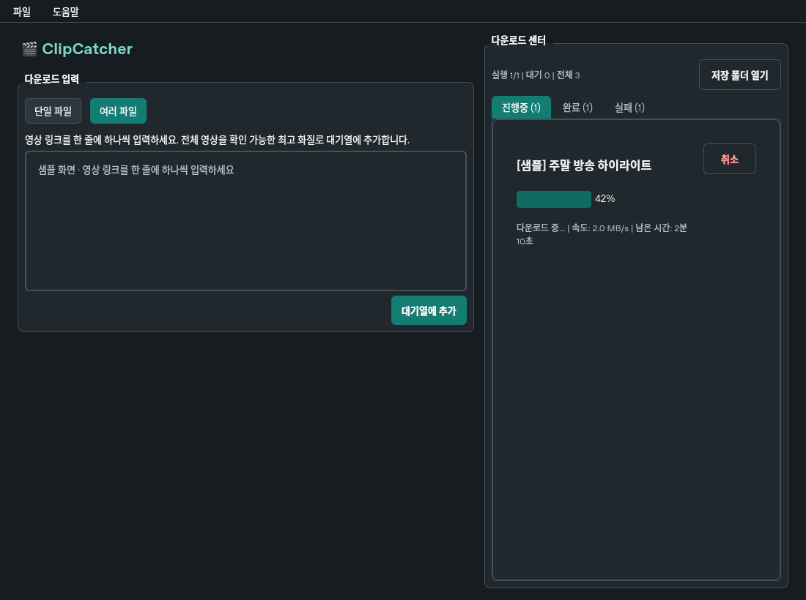
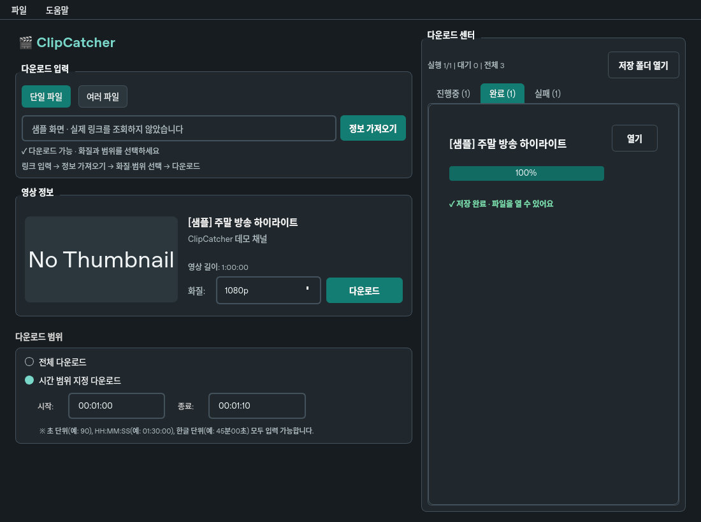
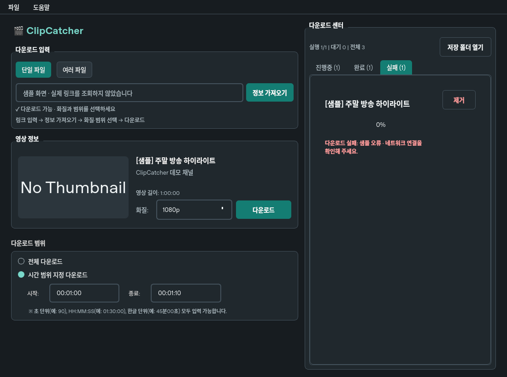

전체 VOD 저장
보관이 필요한 방송은 URL을 넣고 화질을 선택한 뒤 전체 다운로드로 저장합니다.
v2.0.13
ClipCatcher는 치지직 VOD와 클립, YouTube 영상을 GUI에서 내려받을 수 있게 만든 데스크톱 앱입니다. 전체 영상 저장부터 시간 범위 다운로드, 순차 다운로드 관리까지 편집 작업에 필요한 기본 흐름을 한 곳에 모았습니다.

Why It Helps
보관이 필요한 방송은 URL을 넣고 화질을 선택한 뒤 전체 다운로드로 저장합니다.
8시간 방송 중 5:00:00부터 6:00:00까지만 받는 식으로 필요한 구간만 저장할 수 있습니다.
진행중, 완료, 실패 탭으로 작업 상태를 나눠 보고 순차 다운로드 흐름을 관리합니다.
Screens
v2.0.13 소스의 실제 Qt 화면에 샘플 제목·진행률·상태를 표시했습니다. 실제 영상 조회나 다운로드 성공 증거가 아니며, 운영체제에 따라 글꼴과 창 장식은 다를 수 있습니다.


Latest Update
차분한 청록색 테마, 읽기 쉬운 URL·완료·실패 안내와 키보드 포커스 표시를 적용했습니다. 잘못된 설정 JSON 값과 필드 형식을 안전한 기본값으로 복구합니다.
Windows x64·macOS Apple Silicon GUI와 Linux x86_64 CLI를 제공합니다. 기존 HTTPS 프록시 설정을 따르는 클라우드 CLI 사용법은 다운로드 안내에서 확인하세요.

Copyright Notice
ClipCatcher는 사용자가 접근 가능한 영상의 저장을 돕는 도구입니다. 프로그램 사용과 다운로드는 자유롭게 할 수 있지만, 영상과 음성 등 콘텐츠의 저작권은 원 저작권자에게 있습니다. 개인 보관 범위를 넘어 재업로드, 공유, 편집물 공개, 상업적 이용을 할 때는 각 플랫폼의 이용약관과 원 저작권자의 허락 범위를 반드시 확인해주세요.